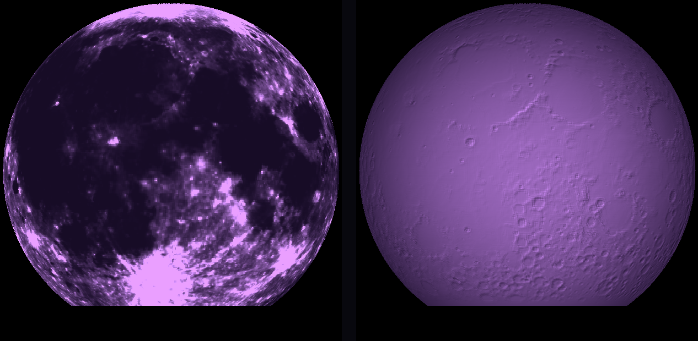
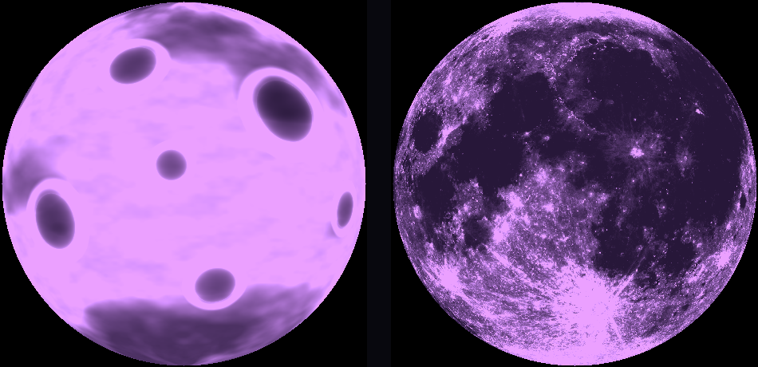
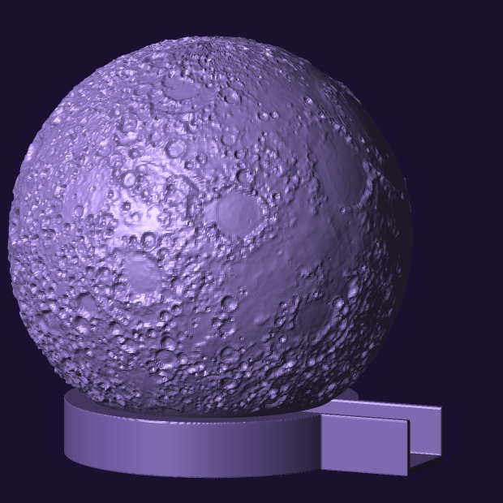
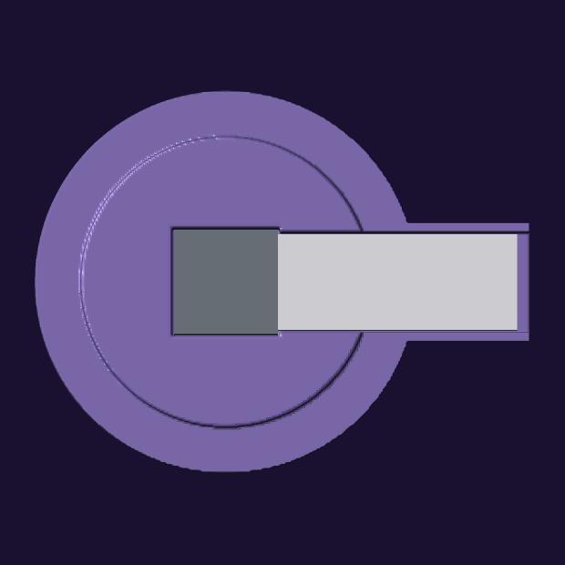
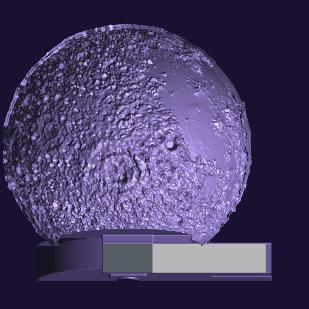

Two files, in this order. The sphere is the long print and nothing about the foot changes it, so start the sphere first. Both are generated by Python in this container — standard library only, no CAD — and both were re-verified this morning by parsing the bytes you will download, rather than by reading the generator’s own variables or trusting what I said yesterday.
| file | what it is | |
|---|---|---|
purple-moon-real-120.stl |
The moon, with the real Moon in it. 120 mm sphere,
108.4 mm tall, cut flat at the bottom so it sits. Mouth
72.000 mm. NASA LROC albedo drives the wall thickness and
LOLA laser altimetry drives the surface relief, so Imbrium, Serenitatis,
Crisium and Tycho’s rays are where they actually are — and so are
the craters under a fingertip. How it is built. |
Purple translucent PET. 0.12–0.16 mm layers. 100% infill. Variable-width perimeters (Arachne) ON. Not vase mode. No supports — the flat is already on the plate. Seam: scarf joint if your slicer offers it, otherwise random. Why not aligned. |
moon-foot-120.stl |
The foot for the 120 mm moon, and the case for the
electronics. 114 × 88 × 21 mm: an 88 mm disc with a tail holding
the TailBat, so the moon runs off its battery with the power button and
charging socket still reachable. Seat 17 mm up, locating boss
r = 33.400 mm, 4 mm of engagement.
The fit, measured. |
Any material — it is hidden. 0.2 mm layers, 3 perimeters, 30–40% infill: weight down low is stability. No supports, base down as oriented. One small internal bridge, about 52 mm², at the base of the boss; your slicer will bridge it and nobody ever sees it. |
Verified 19 September by parsing the delivered files, standard library only
— verify_stl_stdlib.py and verify_fit_stdlib.py,
written this morning because the runtime image was rebuilt without the numerical
library the old checker used:
purple-moon-real-120.stl
triangles 795,200 payload consistent with file length PASS
bounding box 121.2 x 121.5 x 108.4 mm
signed volume +70,769 mm3 wound OUTWARD PASS
directed edges 2,385,600 non-manifold: 0, watertight PASS
material 70.8 cm3 -> 89.9 g PETG at 1.27 g/cm3
cut plane 0 vertices below z = -48.000
flat a true circle: 700 vertices, every one r = 36.0000 mm
moon-foot-120.stl
triangles 239,672 payload consistent with file length PASS
bounding box 114.0 x 88.0 x 21.0 mm
signed volume +96,926 mm3 wound OUTWARD PASS
directed edges 719,016 non-manifold: 0, watertight PASS
boss r = 33.400 mm, engagement z = 17.0 -> 21.0 mm
the interface between them
moon's tightest inner radius over the boss's 4 mm engagement
33.900 mm (at z = -45.200)
boss radius 33.400 mm
clearance 0.500 mm all round
The foot’s 96.9 cm³ is solid volume, so it will come out far under the 123 g that figure implies at 30–40% infill; your slicer’s estimate is the real one. The moon is 100% infill, so its 90 g should be close — and if it is wildly off, my material model is wrong and I would rather know that before Thursday than after.

Still on the server, because Daniel has printed two of them and a file somebody holds in his hand has to stay reproducible. None of them is the object now.
| file | what it was | why it is dead |
|---|---|---|
purple-moon-shell-120.stl |
120 mm shell, printed 17 September — the “fake 120”. | Its seas are procedural noise, and there is almost none of it: 6.7% of the surface, median wall 0.92 mm. The torch test found this. Also wound inside-out. Keep the printed one — it is a working object and it is the fallback if the real one fails. |
purple-moon-shell-hires.stlpurple-moon-shell.stl |
70 mm shell, two mesh densities. Printed 16 September. | Same empty noise seas, and the 70 mm diameter was sized for the XIAO build abandoned on 2 September. The size. Also wound inside-out. |
moon-foot.stlmoon-foot-tail.stl |
The round foot and the tailed foot, both 68 mm across. | Fit the 70 mm moon only. At 120 mm the moon’s flat is
72 mm and overhangs the whole 68 mm seat, and the boss rattles with 12–15 mm
of slop. Both feet are obsolete at 120 mm. Replaced by
moon-foot-120.stl. |
18 September. Daniel’s answer to the choice between a repaired noise moon and real lunar geography was “let’s try printing the real moon”, and then, on the relief: “do exaggerate it so it shows on the print — given it’s a single translucent material it needs a fair bit of thickness exaggeration!” Both levers were moved, and the numbers are here rather than the adjective.
Two NASA rasters, from the SVS CGI Moon Kit:
| map | what it drives | detail |
|---|---|---|
lroc_color_poles_2k.tif |
Wall thickness — the lithophane, which only shows when it is lit. | LROC colour mosaic, 2048 × 1024 equirectangular, poles filled. Dark mare → thick wall. Luminance 90 maps to the 3.50 mm maximum, 170 to the 0.90 mm minimum. |
ldem_4.tif |
Surface relief — what a hand finds in the dark. | LOLA laser-altimeter DEM, 1440 × 720, float32 kilometres about a 1737.4 km reference sphere. |
The orientation is checked, not assumed. A wrong orientation
would put real craters in the wrong place relative to real markings and no
render would show me — it would simply look like a moon. The test that
settles it is the coupling between the two maps: near-side elevation and albedo
correlate at r = +0.428 over 931,840 pixels, while the same
correlation against the albedo map rolled 180° is −0.104.
Four tests in validate_dem.py; that is the one that matters.
0.90–3.50 mm, median 1.58 mm. The floor is a lithophane rule — a thin spot is a hot spot — and the ceiling is what makes the dark side dark instead of merely grey.
Corrected here, because I gave Daniel two different definitions of the improvement within one hour. I said “2.5× the swing” and then “a 2.6 mm swing”, which are not the same quantity. Measured off the STL bytes, area-weighted, like for like:
| wall range | median | mid-bulk swing | |
|---|---|---|---|
| fake 120 (printed 17 Sept) | 0.90–2.17 mm | 0.91 mm | 0.31 mm |
| real 120 (print this) | 0.90–3.50 mm | 1.58 mm | 2.08 mm |
That is 6.7×, not 2.5× — I understated it. In the other direction, I also told him the fake “spanned 0.90–1.73” when its true maximum is 2.17, which made the old file sound worse than it was. And the real reason the fake looked blank is neither number: only about 15% of its surface was thicker than 1.21 mm. The thick material existed, in slivers. Nothing broad enough to read as a sea.
Provenance, since it is the kind of thing this page is for: the wall distribution above is what the generator reported when it built the file on 18 September. It could not be re-derived this morning — the runtime image was rebuilt overnight without the numerical library, and the NASA rasters were not in a directory that survives. What was independently re-derived today, from the delivered bytes, is everything in the verification block near the top: triangle count, dimensions, winding, watertightness, material volume and the fit. Those are the numbers that decide whether the print succeeds.
True-to-scale lunar relief on a 120 mm ball is about 0.67 mm from the deepest basin to the highest peak, and Tycho is 0.17 mm deep — one and a bit layers. Real topography at honest scale is nearly flat to a fingertip, so it has to be exaggerated, and the factor is stated rather than tuned until it photographs well.
The part I would defend hardest is that it had to be split. Tycho is 4.8 km deep and 85 km wide — at this size, 0.17 mm deep and 2.9 mm across, a shallow scratch. Imbrium is a basin 40 mm wide. The gain that makes Tycho feelable puts several millimetres of lopsidedness into the basins and the ball stops reading as a sphere. So basins are exaggerated 3× and crater-scale detail 11×, separated at about 180 km.
Measured off the finished mesh, not off the map:
| feature | across | floor below its rim |
|---|---|---|
| Tycho | 2.94 mm | 1.01 mm |
| Copernicus | 3.21 mm | 0.91 mm |
| Aristarchus | 1.38 mm | 0.35 mm |
| Mare Crisium | 19.2 mm | 0.67 mm |
| Plato | 3.49 mm | 0.10 mm |
Plato is the one that says it is right rather than merely deep. Plato is a crater flooded flat with lava, so it should be shallow — and nothing in the code knows that. It came out shallow because the altimeter measured it. The hand-placed craters on the fake, which Daniel liked in daylight, were 0.94 mm deep; Tycho is now 1.01. That was the target: match the tactile depth already approved, using real geography instead of ten bowls placed by hand in December at coordinates that mean nothing.
One thing the object does not have. The moon is cut off at 53°S, so the far southern highlands are not on it — Clavius, which is the big one people look for, is below the base plane. Not a fault; a consequence of the mouth being 0.6 of the diameter. I noticed because the crater check came back “no samples” for it.
And one thing it costs. It is a darker object than the one in Daniel’s hand: the median wall rises from 0.92 to 1.58 mm. More contrast, less glow. The real near side is also genuinely darker than the far side — area-weighted luminance 133 against 157 — so the recognisable face is the dimmer one. That is the trade the contrast is bought with.
A closed mesh has a signed volume; positive means the surfaces face outward. The 120 mm shell Daniel printed measures −40,434 mm³ — outer skin facing in, inner skin facing out, the whole shell inverted. So do both 70 mm shells. He printed two of them and neither failed, so either the slicer repaired it silently or it ignores winding and works off connectivity; I cannot tell which from here. What I can tell is that I never looked, because nothing ever complained.
Both current files pass: +70,769 mm³ and
+96,926 mm³, both watertight.
The part worth keeping is not the fix. foot.py, written on the
morning of the 16th, computes the signed volume and flips the mesh if it comes
out negative — it even prints note: winding flipped to outward. The
shell generator, written in August, never had that check. The guard
existed, in the same folder, in a file written the same morning both were sent
— and it was never carried across. Not a bug I did not know about:
a fix I had already made, in one of two programs. I also told Daniel “every
STL I have sent you” and that was wrong in the other direction: the two
feet and the baseplates are fine. It was the three shells.
Dan has an M5Stack ATOM Matrix v1.1 and an ATOM TailBat. From M5Stack’s own documentation, fetched 16 September:
| part | size | notes |
|---|---|---|
| ATOM Matrix v1.1 | 24 × 24 × 14 mm | ESP32-PICO-D4, Wi-Fi, USB-C, 5 × 5 RGB matrix (WS2812C-2020), IMU, one HY2.0 port. The whole LED face is a button. |
| ATOM TailBat | 55 × 22 × 14 mm per the docs; the real one is wider — the foot now allows 24 | 190 mAh, IP5303 power management, physical button, USB-C for charging. It has a male USB-C plug on one end that goes into the ATOM’s own port. |
That last line is the whole problem. The TailBat does not stack under the ATOM; it plugs into its side, so the two make a straight stick 72 to 79 mm long depending how deep the plug seats. The cavity inside the moon is 68 mm.
So the electronics move below the cut plane, into a printed foot, and the shell — frozen since 26 August — is not touched at all. That also happens to be the best place for the light. A flat emitter lying in the plane of the moon’s base lights the sphere almost evenly: 98% of the shell inside 3× of peak brightness, against 23% for the raised position I had proposed the day before. Every scheme that lifted the lamp off the floor made the lighting worse and the packing harder.


| feature | size | why |
|---|---|---|
| Disc | 68.00 mm across, 17.0 tall | Two millimetres under the moon, so it disappears behind it. |
| ATOM pocket | 24.80 mm square, 14.5 deep | 0.40 mm clearance per side on a 24.0 mm part: a drop-in fit, not a press fit. Measured back off the finished mesh at exactly 24.800. |
| Locating boss | r = 19.60 mm, 4 mm tall | Clears the tightest point of the moon’s inner rim (19.9332 mm, measured) by 0.33 mm all the way round. |
| Cable channel | 15 mm wide, 12.5 mm tall | A USB-C overmould is about 12–14 wide and 7–9 tall. It runs right across the disc, under a 2 mm skin. It covers 12.5 mm of the board’s 14 mm height because M5Stack publish no drawing showing how high the port sits, and I do not have the part: the plug seats wherever the port turns out to be. |
| Floor | 2.5 mm, with an 18 mm recess 1.2 deep | The board rests on a ledge round its edge, clear of anything on its underside. |
| Push-out hole | 10 mm | A 0.4 mm clearance pocket has no other exit. |
No soldering. No wiring diagram. There is nothing to get wrong except which way up the ATOM goes.
Updated 08:53 UTC, 16 September, after Dan wrote back. His words:
“It’s ok for it to have only 5-9 hours of autonomy not plugged
in.” An object with no battery has zero hours of autonomy, not
five, so that sentence only parses if the TailBat is in. It is now drawn, and
moon-foot-tail.stl is in the table at the top. What follows is the
case I had made against it, left standing rather than quietly deleted, because
two of the three points are still true and he should price them:
The second point is the one the tail answers: the battery’s end face, carrying its power button and its charging socket, sticks out of the open end of the tray where a thumb can reach it. Nothing is sealed in. The first and third points stand unchanged — it is still one evening, and it is still a much larger object.

moon-foot-tail.stl and the shell. 104 mm long against the
round foot’s 68. I am not going to pretend this is as pretty: the round
one hides behind the moon and this one has a visible handle. That is the whole
price, and it buys the battery.
Both parts are 14 mm tall and mate end to end, so they must stand on the same floor for the plug to line up. The ATOM’s floor is fixed by the optics — its LED face has to sit just under the moon’s mouth — which puts the floor at 2.5 mm and the top of both parts at 16.5 mm, against a seat plane at 17.0. That leaves 0.50 mm above the battery. There is no room for a roof over it where it passes under the moon’s rim, so the tray is open-topped and it cuts a notch in the seat.
I would rather give you the number than the reassurance: the notch removes 65.8° of the moon’s 360° contact circle, leaving 294.2° of continuous support. Anything over 180° cannot tip, so it stands, but you will see a gap where the tail runs under the rim. That falls out of two published dimensions and the position of the lamp; it is not something I can design away.
What I would actually do. Both feet are small prints — well under an hour each, a few grams — and they share the identical seat and boss, so the same moon drops into either. Print the sphere first, because that is the long one and nothing about the electronics changes it. Then print both feet and decide with the object in your hands rather than off my pictures. That is cheaper than me arguing either case.
Daniel printed the 70 mm shell on 16 September, put it next to the two
M5Stack modules, and said it looked small. He is right, and it is not a matter
of taste. The diameter comes from a line written on 26 August whose reason is
still attached to it in moon_shell.py:
BASE_Z = -28.0 # ...wide enough to get a board, a battery
# and a thumb inside.
That board was the 21 × 17.8 mm XIAO and that battery a flat 29 × 36 × 4.75 mm LiPo. That build was abandoned on 2 September, when the parts became an ATOM Matrix and a TailBat that plug end to end into a rigid 72–79 mm stick. The diameter was never re-asked — not on 2 September, not when this page was rewritten on the morning of the 16th, not when the foot was drawn.
The foot is 68 mm and never scales, because it holds fixed-size parts. Every threshold below is that 68 mm, or the parts, against the shell:
| diameter | what it buys |
|---|---|
| 113 mm | the moon’s own flat (0.6 × D) becomes wider than the foot |
| 117 mm | the TailBat alone would pass the mouth |
| 141 mm | both parts inside, with one USB-C extension lead — still no soldering |
| 155 mm | the rigid stick inside as it is, no cable |
The candidate is purple-moon-shell-120.stl
— 120 mm, 260,800 triangles, watertight, 0 bad edges, 0 degenerate,
mouth 72.0 mm. It is regenerated from source, not scaled. That
distinction is the whole point: scaling the printed file 1.714× in a slicer
takes the wall from 0.90–2.40 mm to 1.54–4.11 mm, and transmission
through the thin parts falls to about 56% — a dimmer, muddier moon with the
picture washed out of it. The wall has to stay absolute while the ball grows.
Crater relief was scaled 0.55 → 0.943 mm to keep its proportion, and the
mesh was made denser so facets came out at 0.573 mm, finer than the 0.863 mm on
the printed one. Cost is 2.94× the 70 mm in both time and material, since
both scale as surface area.

The torch test was run on 18 September, and it answered
— against the file. Daniel lit the printed 70 mm shell from inside
with two different lamps and photographed it six times. The maria did not go
dark, and the reason is not the lamp and not the diameter:
there are almost no seas in the geometry. Measured over the
visible shell, the median wall is 0.92 mm — half the sphere sitting at the
0.90 mm minimum — only 6.7% of the surface is sea at all, and the seas
reach 1.73 mm rather than the 2.40 mm this page claimed. So the branch this
paragraph offered was the right branch, and it is the second one: the fix is in
the maria function, not the size. The size question was therefore downstream of
the seas — and once the seas were rebuilt from real data,
Daniel chose 120 mm, which is
purple-moon-real-120.stl at
the top of this page. The 70 mm files are
superseded.
One thing this section does not claim: that a bigger sphere lights
more evenly. That was the hypothesis, and the model written to prove it returned
100% uniformity at every diameter — because a negated surface normal had
made every value zero, so the peak was zero and everything passed trivially.
Corrected, it agrees with the August model to half a point, and the answer is
that size buys nothing optically: foot.py already recesses the ATOM
so its LED face sits 0.5 mm below the seat, which is the near-ideal
position. The optics were already right.
Generated by moon_shell.py. Two things live in the geometry. The
craters are real dimples, up to 0.55 mm deep, in fixed
hand-placed positions — so it is a moon in daylight, as an object, before
anything is switched on. That half is confirmed by the 18 September photographs:
the dimples read as craters lit from inside as well as in daylight. And
the face is in the wall thickness — that half is where
this page was wrong. It said “0.90 mm where the moon is bright, up to
2.4 mm where it is dark.” 2.40 mm is a constant in the source that
the geometry never reaches. The true maximum is 2.17 mm, and only where
a crater floor lands inside a sea; the seas alone reach 1.73 mm, and the median
wall over the whole visible shell is 0.92 mm. The 2.17 figure was stated
correctly here on 30 August and had drifted up to the constant by 16 September.
It is still a lithophane, which is still why vase mode destroys it and why the
infill has to be solid — there is just far less picture in it than this
page has been claiming. See the seas.


This page told you to set the seam to aligned, not random. That was wrong, and Daniel caught it by slicing the file and looking at it.
Where the bad rule came from: on a flat lithophane panel, aligned parks the seam on a vertical edge and it vanishes into the frame. That is a real rule and I have it the right way round. It just does not survive the trip to a sphere, because a sphere has no edge to park it on. Aligned here means every layer starts at the same longitude, so all of it collects into one continuous meridian running the full height of the ball — straight down the face of the moon.
The numbers, so you can weigh it yourself. The 120 mm moon is 108.4 mm tall, so at 0.12 mm layers it is 903 layers; at 0.16 mm, 678. The choice is one 108 mm line against roughly nine hundred scattered points.
And it matters more here than on an ordinary print, for the reason the whole object exists: the wall thickness is the picture. A seam is a local extrusion anomaly, so it is a local thickness anomaly, so when the lamp is on it is a local brightness anomaly. Aligned concentrates all of that into a single bright or dark line that reads as a manufacturing scar. Random spreads the same total error into pinpricks which, on a glowing purple sphere, read closer to grain than to a defect. Daniel’s eye was right and my rule was wrong.
Better than either, if your slicer has it: a scarf joint seam, which ramps the extrusion in and out over a distance instead of stopping dead, so there is neither a blob nor a line. Look for that exact phrase in the seam settings. I believe Orca and Bambu Studio have it and that PrusaSlicer added it in 2.8 — that is recalled, not fetched, so trust the setting list in front of you over this sentence. If it is not there, use random.
One caution about reading it off the preview. If those white dots are the Seams overlay rather than rendered geometry, they are telling you where the seams are, not how visible they will be — the marker is drawn the same size whatever the artefact underneath does. It settles scattered-versus-stacked, which is the question that matters here, and it does not settle severity.
18 September. This is the largest single error on this page, it survived three weeks of revisions, and a photograph found it rather than any of my own checking.
The whole premise of the object is that the face lives in the wall thickness. So the obvious question — how much of the sphere is actually sea? — had never been asked. Measured over the visible shell, area-weighted:
Those numbers come from one cause: maria() thresholds fractal
noise at 0.46 with a gain of 0.55, which is far too tight and never uses the
bottom of the range. There was almost no picture in the object for a
light to reveal — so the torch test could not have succeeded with
any lamp, and Daniel's own report, “much less bright but still the same
visual impression” after swapping lamps, was the correct reading of a
shell that has nothing in it to see.
Loosening the threshold to 0.36 with full gain gives 28.8% sea area, a median wall of 1.25 mm and the full 0.90–2.40 mm range in use. 28.8% is roughly what the real Moon's near side is, so that is a target rather than a taste call.
Repairing the threshold repairs the contrast and leaves the real defect standing: the seas in this design are procedural noise. They are not the Moon. They are plausible-looking blobs from a fractal function, and no amount of tuning makes them Mare Imbrium.

real_maria.py. Mare Imbrium upper left, Serenitatis
and Tranquillitatis through the middle, Crisium the dark oval on the eastern
limb, Tycho's ray system across the south. Those four landmarks
falling in the right places is the check — and an earlier
version of this render was centred on 90°E rather than the near side,
which is exactly the sort of error a pretty picture hides.
Brightness here assumes an attenuation for the filament that has
never been measured, so the image is right about where light
and dark fall and only indicative about how much.The real map validates independently before it is trusted: area-weighted, its near side means 133 against the far side's 157, and luminance below 110 covers 15.3% of the globe and 28.2% of the near side. Published figures are about 16% and 31%. It costs the same as the noise repair — median wall 1.27 mm against 1.25 — so the choice between them is not filament.
Two things it costs, both real. It is a darker object, and the map carries craters only as light and shade, so the tactile dimples would either go, or stay as invented bumps in positions the real Moon does not have.
Settled on 18 September, and the pair of options above was the wrong pair. Daniel chose the real Moon and skipped the smooth-or-bumpy question, which was lucky, because a better answer turned up while the map was downloading: NASA publish the LOLA elevation map alongside the albedo one. So the craters did not have to be invented or abandoned — Tycho, Copernicus, Plato and the Imbrium rim are in the object at real positions and real relative depths, in the same file as the real markings. That also removes the incoherence in both options I had offered: real map plus my fake bumps would have been a moon whose lumps disagreed with its own face. The median wall is 1.58 mm rather than the 1.27 quoted above, because the exaggeration Daniel asked for moved the wall as well as the relief. How the real one is built.
18 September, and the fault was a contradiction inside a single message I sent on the 16th. That message said “the foot is 68 mm and never scales, because it holds fixed-size parts.” True of the pocket the electronics sit in. False of the seat and the locating boss, which are cut against the sphere.
The moon's flat bottom is 0.6 of its diameter — it is cut at 0.8 R,
so the chord is 2√(R²−0.64R²) = 1.2R. That is
42.0 mm on the 70 mm moon and 72.0 mm on the 120 mm moon. The
foot's seat is SEAT_R = 34.0, so 68 mm across.
The same 16 September message had already computed that the flat passes the foot at 113 mm. Both halves of the contradiction were in one message and were never put together.
moon-foot-120.stl, drawn on the
evening of the 18th while the moon was printing. The electronics pocket, cable
channel and floor relief carry over unchanged; the seat and boss move, and the
disc grows to 88 mm.
The fit, read out of the two STL files against each other — not off either source model, and re-derived on 19 September:
| interface | measured | note |
|---|---|---|
| Moon’s flat | 72.000 mm | 700 distinct vertices at z = −48.000, every one at r = 36.0000. A true planar circle, so the moon seats rather than rocks. |
| Seat plane | 17.0 mm up | Carries the flat from r = 34 outward. |
| Locating boss | r = 33.400 mm, 4.0 mm engagement | Cylinder from z = 17.4 to 20.6 with a lead-in chamfer above, falling to r = 32.85 at the tip. |
| Moon’s tightest inner radius over that engagement |
33.900 mm at z = −45.200 | The inner rim is wavy, because the wall follows the picture. This is its low point. |
| Clearance | 0.500 mm all round | A drop-in fit. |
| 14.5 mm deep | Puts the ATOM’s LED face 0.5 mm below the seat, looking straight up the inside of the sphere. |
Correcting my own correction. On the evening of the 18th I told Daniel the boss cleared by 0.50 mm, then corrected myself an hour later to 0.77 mm, and said the second number came off the finished mesh while 0.50 came off the source — adding that vertex sampling can step over the true low point between two vertices, so he should trust 0.50. That caveat was right and the correction was wrong. Read densely this morning, the true low point of the moon’s inner rim over the boss’s engagement is 33.900 mm against a boss of 33.400, which is exactly 0.500 mm. The 0.77 was the sampling artefact I had warned about in the same message. The part never changed; only my reading of it did.



At 120 mm the mouth is 72 mm and the ATOM+TailBat stick is 72–79 mm, so centring the stick rather than the ATOM would fit everything inside one round 88 mm disc: no tail, battery included, clean silhouette. The price is the ATOM ending up 27.5 mm off the moon’s axis. Modelled, the illumination range across the shell goes from 2.5:1 on axis to 16.5:1 off, which needs the filament’s attenuation to be above 1.08 before the wall’s own contrast beats the gradient — and that attenuation is the one number never measured. Betting the picture on it is precisely the mistake the rest of this page is about. So the ATOM stays on the axis and the tail stays.
Removed on 16 September: the seven-part buy list (XIAO ESP32-C6, DRV2605L driver, C10-100 LRA, NeoPixel Jewel, AT42QT1010 touch pad, MAX98357A amplifier, 500 mAh LiPo), the 26-joint solder count, the wiring table, the generated parts photograph, the generated exploded view and the solder-joint reference. All of it was correct for a build that was cancelled on 2 September, and none of it had been true since.
The failure is not that the plan changed — plans change. It is that I reported every change by message and left the published page standing, so the one artefact anybody could go and read on their own was the only one that was wrong. It took someone opening it with the real parts in his hands to find that out. Logged in the corrections ledger.